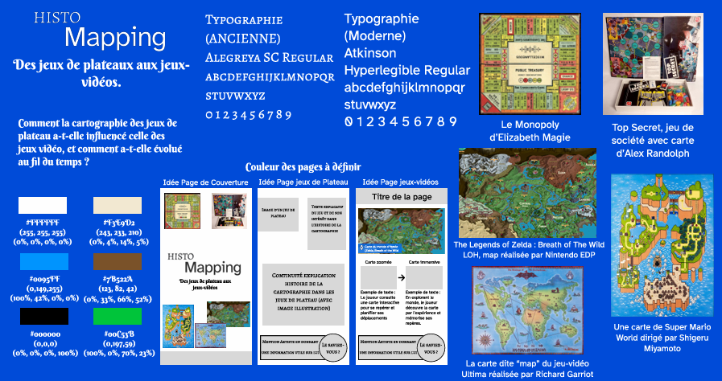

Univers visuel
La planche tendance m'a permis de définir une ambiance graphique cohérente avec le sujet du fanzine, entre cartographie, jeux de plateau et jeux vidéo.
AC33.05
Projet éditorial
Cette planche tendance présente les intentions visuelles ayant guidé la direction artistique du fanzine HistoMapping, notamment les références, les couleurs, les typographies et l'ambiance graphique du projet.

Cliquez sur l'image pour voir les détails.
Les intentions définies dans la planche tendance ont ensuite été appliquées à la conception éditoriale du fanzine HistoMapping, notamment à travers les choix de couleurs, de typographies, d'illustrations et de composition.
Cliquez sur une page pour voir les détails.
La planche tendance m'a permis de définir une ambiance graphique cohérente avec le sujet du fanzine, entre cartographie, jeux de plateau et jeux vidéo.
Les références sélectionnées ont guidé les choix de couleurs, de typographies, d'illustrations et de mise en page utilisés dans le projet.
Cette étape a permis de poser une intention visuelle claire avant la production du fanzine, afin d'assurer une cohérence entre le fond et la forme.
J'ai défini le sujet du fanzine, effectué les recherches documentaires, iconographiques et artistiques, puis identifié les références pertinentes en lien avec les jeux de plateau, les jeux vidéo et leurs univers graphiques.
Ce projet m'a permis de comprendre l'importance d'une direction artistique claire dans la construction d'un univers visuel. La planche tendance m'a aidé à organiser mes inspirations et à justifier mes choix graphiques avant la réalisation finale du fanzine.